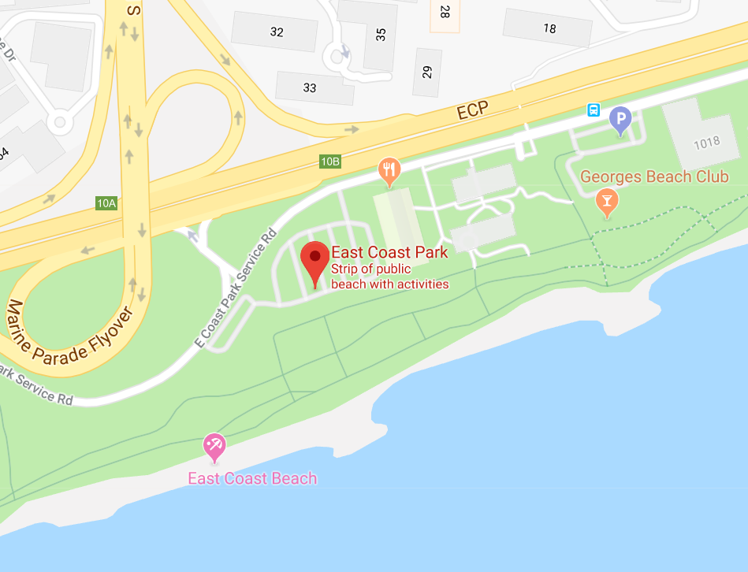

<ion-header>
  <ion-toolbar color="danger">
    <ion-buttons slot="start">
      <ion-menu-button>
      </ion-menu-button>
    </ion-buttons>
    <ion-title>Free Run</ion-title>
  </ion-toolbar>
</ion-header>

<ion-content color="medium" padding>
  <ion-card>
    <ion-item>
      <h1>History</h1>
    </ion-item>
  </ion-card>


  <ion-card [routerLink]="'/gpxhistory'" routerDirection="'root'" color="light">
    <ion-item>
      <ion-avatar item-start>
        
      </ion-avatar>
      <h3>Bedok Reservoir</h3>
      <p>Est. Time: 30 mins</p>
    </ion-item>
    <ion-card-content>
      <p>4km: 36 CheckPoints</p>
    </ion-card-content>

    <ion-row no-padding>
        <ion-col>
          <ion-button clear small color="danger" icon-start>
            <ion-icon name='star'></ion-icon>
            Favorite
          </ion-button>
        </ion-col>
  
        <ion-col text-right>
          <ion-button clear small color="danger" icon-start>
            <ion-icon name='share-alt'></ion-icon>
            Share
          </ion-button>
        </ion-col>
      </ion-row>
  </ion-card>

  <ion-card [routerLink]="'/gpxhistory'" routerDirection="'root'" color="light">
    <ion-item>
      <ion-avatar item-start>
        
      </ion-avatar>
      <h3>East Coast Park</h3>
      <p>Est. Time: 45 mins</p>
    </ion-item>
    <ion-card-content>
      <p>10km: 90 CheckPoints</p>
    </ion-card-content>

    <ion-row no-padding>
        <ion-col>
          <ion-button clear small color="danger" icon-start>
            <ion-icon name='star'></ion-icon>
            Favorite
          </ion-button>
        </ion-col>
  
        <ion-col text-right>
          <ion-button clear small color="danger" icon-start>
            <ion-icon name='share-alt'></ion-icon>
            Share
          </ion-button>
        </ion-col>
      </ion-row>
  </ion-card>
  
</ion-content>